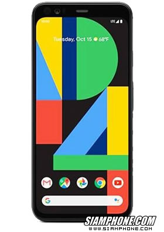
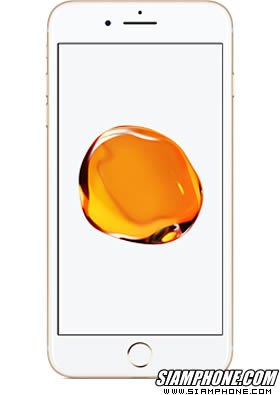
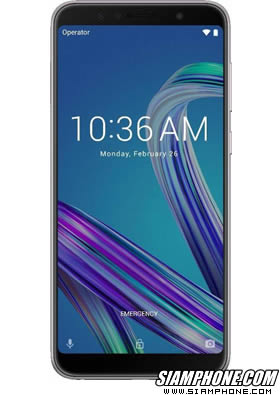

โทรศัพท์ที่เคยใช้
-

Google Pixel 4 XL
เปิดตัวครั้งแรก 5 ตุลาคม 2019 (สยามโฟนฯ) สถานะ ยังไม่วางจำหน่าย วางจำหน่าย ไตรมาสที่ 4 ปี 2019 (ตุลาคม 62) ราคาเปิดตัว - บาท (ยังไม่กำหนดราคา)
Read More -

Apple iPhone 7 Plus
เปิดตัวครั้งแรก 8 กันยายน 2016 (สยามโฟนฯ) สถานะ มีวางจำหน่ายในประเทศไทย วางจำหน่าย ไตรมาสที่ 4 ปี 2016 (ตุลาคม 59) ราคาเปิดตัว 31,500 บาท (ตุลาคม 59) iPhone 7 Plus มีรุ่นความจุ 32 GB, 128 GB ราคา 26,500 บาท
Read More -

ASUS Zenfone Max Pro (M1) ZB602KL
เปิดตัวครั้งแรก 26 เมษายน 2018 (สยามโฟนฯ) สถานะ มีวางจำหน่ายในประเทศไทย วางจำหน่าย ไตรมาสที่ 2 ปี 2018 (มิถุนายน 61) ราคาเปิดตัว 5,990 บาท (มิถุนายน 61) Zenfone Max Pro (M1) ZB602KL มีรุ่น RAM 4GB+ROM 64GB ราคา 6,990 บาท และรุ่น RAM 6GB+ROM 64GB ราคา 7,990 บาท
Read More
รีวิวทั้งหมด
-
Google Pixel 4 XL
เครื่องนี้ยังใช้งานอยู่ปัจจุบัน เป็นเครื่องที่ใช้มาเป็นเวลา 2 ปี โดยรวมยังสเถียรอยู่ ปัญหาน้อยมาก และยังอัพ software มาเรื่อยๆ เป็นยี่ห้อที่โอเคหนึ่งรุ่นเลย
-
Apple iPhone 7 Plus
เครื่องนี้เคยใช้ 3 ปีก่อน เป็นเครื่องที่ยังรู้สึกดูสเถียรทั้งๆที่หยุดอัพเดทไปแล้ว ถ้าไม่ได้เล่นเกมหนักๆแล้วเครื่องร้อน โดยรวมยังสามารถใช้งานทั่วไปปกติได้
-
ASUS Zenfone Max Pro (M1) ZB602KL
เครื่องนี้เคยใช้ 4 ปีก่อน เป็นเครื่องที่มีบัคเยอะมาก กล้องไม่สมสเปค แต่เครื่องสเถียรและร้อนไวมาก โดยรวมไม่สมราคา(มือหนึ่ง) ราคานี้ยังมีเครื่องที่คุ้มราคากว่านี้